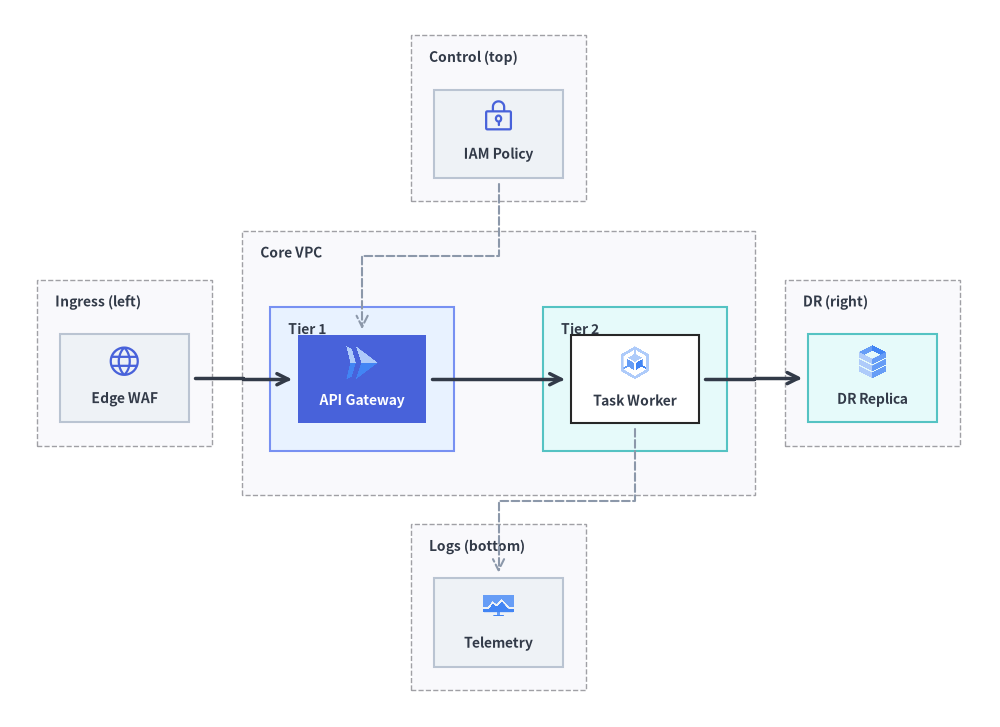
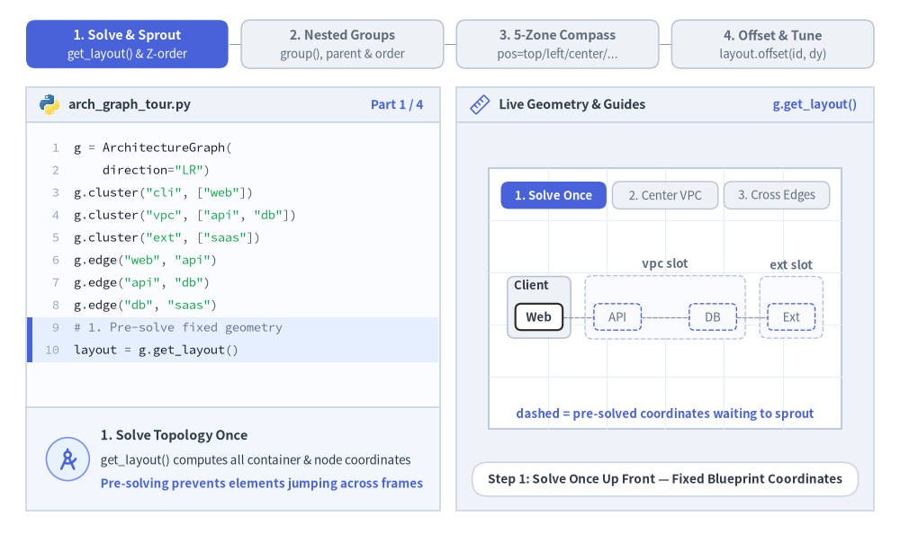
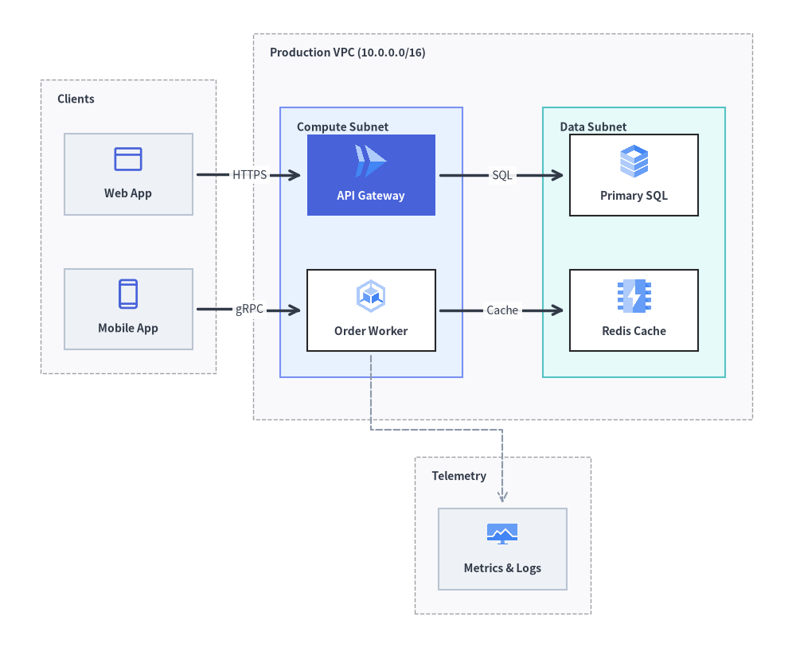
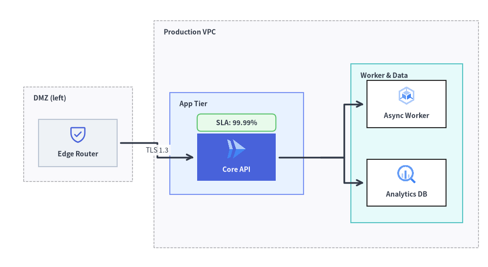

ArchitectureGraph: Cloud Topologies & Nested Containers
ArchitectureGraph is a declarative two-level macro/micro coordinate solver purpose-built for cloud infrastructure, VPC topologies, and multi-zone microservice architectures.
Unlike generic DAG solvers that flatten nested groups or scramble boundary boxes, ArchitectureGraph solves coordinates in two hierarchical phases: packing internal nodes and child clusters inside parent containers (Micro Layout), then arranging top-level containers across a 5-zone compass (pos="left" | "center" | "right" | "top" | "bottom") with orthogonal highway routing (Macro Layout). Pair layout = g.get_layout() with ArchitectureDiagram to render official cloud icon cards (GcpIcon, PhosphorIcon) and nested NodeGroup boundaries at the solved coordinates.

Source Code
from drawlib.canvas import save, setup
from drawlib.diagrams.architecture import ArchitectureDiagram, GcpIcon, Node, NodeGroup, PhosphorIcon
from drawlib.graph import ArchitectureGraph
from drawlib.styles import Styles
setup(width=136, height=99)
# Step 1: Solve 5-zone compass & nested container coordinates
g = ArchitectureGraph(
direction="LR",
container_sep=4.0,
default_node_width=17.5,
default_node_height=12.0,
)
# 1. Top Zone (pos="top")
g.cluster("top_zone", ["iam"], pos="top", padding=3.2, header_height=4.2)
# 2. Left Zone (pos="left")
g.cluster("left_zone", ["waf"], pos="left", padding=3.2, header_height=4.2)
# 3. Center Zone (pos="center") with two nested sub-clusters (parent="core", order=1 & 2)
g.group("core", pos="center", padding=3.8, header_height=4.5)
g.cluster("tier1", ["api"], parent="core", order=1, padding=3.8, header_height=4.2)
g.cluster("tier2", ["worker"], parent="core", order=2, padding=3.8, header_height=4.2)
# 4. Right Zone (pos="right")
g.cluster("right_zone", ["dr_replica"], pos="right", padding=3.2, header_height=4.2)
# 5. Bottom Zone (pos="bottom")
g.cluster("bottom_zone", ["obs"], pos="bottom", padding=3.2, header_height=4.2)
# Connect across all 5 compass zones
g.edge("waf", "api")
g.edge("api", "worker")
g.edge("worker", "dr_replica")
g.edge("iam", "api")
g.edge("worker", "obs")
layout = g.get_layout()
# Step 2: Render containers and cloud icon nodes with ArchitectureDiagram
d = ArchitectureDiagram(
node_style=Styles.Primary,
node_text_style=Styles.DarkBold.patch(text_size=10.0),
edge_style=Styles.DarkBold,
edge_text_style=Styles.Dark.patch(text_size=10.0),
node_card_style=Styles.Neutral,
)
hdr_st = Styles.DarkBold.patch(text_size=10.0, halign="left", valign="top")
c_top = layout.clusters["top_zone"]
grp_top = d.add(NodeGroup("Control (top)", width=c_top.width, height=c_top.height, text_style=hdr_st), xy=c_top.bottom_left)
c_left = layout.clusters["left_zone"]
grp_left = d.add(NodeGroup("Ingress (left)", width=c_left.width, height=c_left.height, text_style=hdr_st), xy=c_left.bottom_left)
c_core = layout.clusters["core"]
grp_core = d.add(
NodeGroup("Core VPC", width=c_core.width, height=c_core.height, text_style=hdr_st),
xy=c_core.bottom_left,
)
c_t1 = layout.clusters["tier1"]
grp_t1 = grp_core.add(
NodeGroup("Tier 1", width=c_t1.width, height=c_t1.height, style=Styles.PrimaryNeutral, text_style=hdr_st),
xy=c_t1.local_bottom_left,
)
c_t2 = layout.clusters["tier2"]
grp_t2 = grp_core.add(
NodeGroup("Tier 2", width=c_t2.width, height=c_t2.height, style=Styles.SecondaryNeutral, text_style=hdr_st),
xy=c_t2.local_bottom_left,
)
c_right = layout.clusters["right_zone"]
grp_right = d.add(NodeGroup("DR (right)", width=c_right.width, height=c_right.height, text_style=hdr_st), xy=c_right.bottom_left)
c_bot = layout.clusters["bottom_zone"]
grp_bot = d.add(NodeGroup("Logs (bottom)", width=c_bot.width, height=c_bot.height, text_style=hdr_st), xy=c_bot.bottom_left)
n_iam = grp_top.add(Node("IAM Policy", *layout["iam"].size, icon=PhosphorIcon.LOCK_KEY, icon_size=4.8), xy=layout["iam"].local_xy)
n_waf = grp_left.add(Node("Edge WAF", *layout["waf"].size, icon=PhosphorIcon.GLOBE, icon_size=4.8), xy=layout["waf"].local_xy)
n_api = grp_t1.add(
Node(
"API Gateway",
*layout["api"].size,
icon=GcpIcon.CLOUD_RUN,
icon_size=5.0,
style=Styles.White,
text_style=Styles.WhiteBold.patch(text_size=10.0),
card_style=Styles.PrimaryFlat,
),
xy=layout["api"].local_xy,
)
n_wrk = grp_t2.add(
Node("Task Worker", *layout["worker"].size, icon=GcpIcon.GOOGLE_KUBERNETES_ENGINE, icon_size=5.0, card_style=Styles.White),
xy=layout["worker"].local_xy,
)
n_dr = grp_right.add(
Node("DR Replica", *layout["dr_replica"].size, icon=GcpIcon.CLOUD_SQL, icon_size=5.0, card_style=Styles.SecondaryNeutral),
xy=layout["dr_replica"].local_xy,
)
n_obs = grp_bot.add(
Node("Telemetry", *layout["obs"].size, icon=GcpIcon.CLOUD_MONITORING, icon_size=4.8),
xy=layout["obs"].local_xy,
)
d.connect(n_waf, n_api, padding=0.8)
d.connect(n_api, n_wrk, padding=0.8)
d.connect(n_wrk, n_dr, padding=0.8)
d.connect(n_iam, n_api, style=Styles.MutedDashed, padding=0.8)
d.connect(n_wrk, n_obs, style=Styles.MutedDashed, padding=0.8)
d.draw(xy=(-5.0, -5.0))
save()
1. Core Concepts & Basic Usage
ArchitectureGraph separates cloud layout solving from visual rendering: call layout = g.get_layout() once to compute overlap-free container boxes (c.xy, c.bottom_left, c.local_bottom_left), node centers (n.xy, n.local_xy), and orthogonal routes (e.points), then render in strict back-to-front Z-order (clusters, edges, nodes) or map directly onto ArchitectureDiagram. You can nest multi-tier subnets inside a parent g.group() via parent and order, pin peripheral services across the 5-zone compass (pos="top" | "left" | "center" | "right" | "bottom") with configurable container_sep corridors, and nudge individual nodes post-layout via layout.offset(id, dx, dy) while keeping connected edge ports synchronized:

Source Code
from __future__ import annotations
from drawlib.anim import Animation
from drawlib.canvas import save, setup
from drawlib.graph import ArchitectureGraph, GraphLayout
from drawlib.icons import code as code_icons
from drawlib.icons import gcp, phosphor
from drawlib.lines import line, lines
from drawlib.shapes import circle, rectangle
from drawlib.smartarts import SourceCode, SourceCodeStyles
from drawlib.styles import Style, Styles
from drawlib.text import text
W, H = 138.0, 82.0
setup(width=W, height=H)
anim = Animation(fps=10.0, loop=0)
CODE_TEXT_SIZE = 10.0
PT_TO_CANVAS = W / 720.0
FONT_CANVAS = CODE_TEXT_SIZE * PT_TO_CANVAS
LINE_H = FONT_CANVAS * 1.8
PAD_Y = FONT_CANVAS * 1.2
CODE_STYLES = SourceCodeStyles.get("default", font_lang="en", text_size=CODE_TEXT_SIZE).patch(
box_style=Styles.Neutral.patch(shape_fill_color=(0, 0, 0, 0), shape_line_width=0),
)
PANE_HEADER = Styles.Neutral.patch(
shape_fill_color=(238, 243, 250),
shape_line_color=(203, 213, 225),
shape_line_width=1.2,
shape_r=0.0,
)
EDITOR_BODY = Styles.Neutral.patch(
shape_fill_color=(250, 252, 255),
shape_line_color=(203, 213, 225),
shape_line_width=1.2,
shape_r=0.0,
)
TAKEAWAY_BODY = Styles.Neutral.patch(
shape_fill_color=(242, 246, 253),
shape_line_color=(203, 213, 225),
shape_line_width=1.2,
shape_r=0.0,
)
STUDIO_BODY = Styles.Neutral.patch(
shape_fill_color=(239, 243, 249),
shape_line_color=(203, 213, 225),
shape_line_width=1.2,
shape_r=0.0,
)
PART_ITEMS = [
("1. Solve & Sprout", "get_layout() & Z-order"),
("2. Nested Groups", "group(), parent & order"),
("3. 5-Zone Compass", "pos=top/left/center/..."),
("4. Offset & Tune", "layout.offset(id, dy)"),
]
def draw_step_bar(active_part: int) -> None:
"""Draw top 4-part progress bar (active_part is 1..4)."""
pill_w = 31.0
pill_h = 7.4
gap = 2.0
start_x = 4.0 + pill_w / 2.0
cy = 75.2
for idx, (label, sublabel) in enumerate(PART_ITEMS, start=1):
cx = start_x + (idx - 1) * (pill_w + gap)
if idx > 1:
prev_cx = cx - (pill_w + gap)
line(
(prev_cx + pill_w / 2.0 + 0.2, cy),
(cx - pill_w / 2.0 - 0.2, cy),
style=Styles.PrimaryBold if idx <= active_part else Styles.MutedThin,
)
if idx == active_part:
st = Styles.PrimaryFlat.patch(shape_r=1.4)
tst = Styles.WhiteBold.patch(text_size=10.3)
sub_tst = Styles.White.patch(text_size=9.5)
elif idx < active_part:
st = Styles.PrimaryNeutral.patch(shape_r=1.4, shape_line_width=1.1)
tst = Styles.PrimaryBold.patch(text_size=10.3)
sub_tst = Styles.Primary.patch(text_size=9.5)
else:
st = Styles.Neutral.patch(shape_r=1.4, shape_line_width=1.1)
tst = Styles.MutedBold.patch(text_size=10.3)
sub_tst = Styles.Muted.patch(text_size=9.5)
rectangle((cx, cy), width=pill_w, height=pill_h, style=st)
text((cx, cy + 1.35), label, style=tst)
text((cx, cy - 1.55), sublabel, style=sub_tst)
def draw_left_pane(
active_part: int,
code_lines: list[str],
hl_range: tuple[int, int],
icon_fn: object,
summary_title: str,
summary_line1: str,
summary_line2: str,
) -> None:
"""Draw left Python code editor + bottom concept takeaway card."""
x0, w = 4.0, 63.5
cx = x0 + w / 2.0
top_y = 63.2
header_h = 5.4
editor_h = 43.8
takeaway_h = 15.8
rectangle((cx, top_y + header_h / 2.0), width=w, height=header_h, style=PANE_HEADER)
code_icons.python((x0 + 3.6, top_y + header_h / 2.0), width=3.4, style=Styles.Neutral)
text(
(x0 + 6.5, top_y + header_h / 2.0),
"arch_graph_tour.py",
style=Styles.DarkBold.patch(text_size=10.2, halign="left"),
)
text(
(x0 + w - 2.6, top_y + header_h / 2.0),
f"Part {active_part} / 4",
style=Styles.PrimaryBold.patch(text_size=9.8, halign="right"),
)
rectangle((cx, top_y - editor_h / 2.0), width=w, height=editor_h, style=EDITOR_BODY)
hl_start, hl_end = hl_range
hl_top = top_y - PAD_Y - hl_start * LINE_H
hl_bot = top_y - PAD_Y - (hl_end + 1) * LINE_H
hl_cy = (hl_top + hl_bot) / 2.0
hl_h = hl_top - hl_bot
rectangle(
(cx, hl_cy),
width=w - 0.6,
height=hl_h,
style=Styles.Neutral.patch(shape_fill_color=(229, 239, 255), shape_line_width=0),
)
rectangle(
(x0 + 0.55, hl_cy),
width=0.9,
height=hl_h,
style=Styles.PrimaryFlat.patch(shape_line_width=0),
)
SourceCode.draw(
xy=(x0, top_y),
width=w,
code="\n".join(code_lines),
styles=CODE_STYLES,
code_lang="python",
show_linenum=True,
align="top_left",
)
take_cy = 3.6 + takeaway_h / 2.0
rectangle((cx, take_cy), width=w, height=takeaway_h, style=TAKEAWAY_BODY)
circle(
(x0 + 6.4, take_cy),
radius=3.3,
style=Styles.PrimaryNeutral.patch(shape_line_width=1.2),
)
icon_fn((x0 + 6.4, take_cy), width=3.8, style=Styles.PrimaryBold) # type: ignore[operator]
text(
(x0 + 11.4, take_cy + 3.6),
summary_title,
style=Styles.DarkBold.patch(text_size=10.4, halign="left"),
)
text(
(x0 + 11.4, take_cy - 0.2),
summary_line1,
style=Styles.Dark.patch(text_size=9.7, halign="left"),
)
text(
(x0 + 11.4, take_cy - 3.8),
summary_line2,
style=Styles.PrimaryBold.patch(text_size=9.6, halign="left"),
)
def draw_geometry_studio(param_badge: str, footer_caption: str) -> tuple[float, float]:
"""Draw right geometry lab shell, inner coordinate sheet with subtle grid, and footer."""
x0, w = 70.0, 64.0
cx = x0 + w / 2.0
top_y = 63.2
header_h = 5.4
body_h = 59.6
rectangle((cx, top_y + header_h / 2.0), width=w, height=header_h, style=PANE_HEADER)
phosphor.ruler((x0 + 3.6, top_y + header_h / 2.0), width=3.4, style=Styles.Primary)
text(
(x0 + 6.5, top_y + header_h / 2.0),
"Live Geometry & Guides",
style=Styles.DarkBold.patch(text_size=10.2, halign="left"),
)
text(
(x0 + w - 2.6, top_y + header_h / 2.0),
param_badge,
style=Styles.PrimaryBold.patch(text_size=9.6, halign="right"),
)
rectangle((cx, 3.6 + body_h / 2.0), width=w, height=body_h, style=STUDIO_BODY)
sheet_cx, sheet_cy = cx, 36.2
sheet_w, sheet_h = 54.0, 40.0
sx0, sy0 = sheet_cx - sheet_w / 2.0, sheet_cy - sheet_h / 2.0
rectangle(
(sheet_cx, sheet_cy),
width=sheet_w,
height=sheet_h,
style=Styles.Neutral.patch(
shape_fill_color=(255, 255, 255),
shape_line_color=(180, 194, 214),
shape_line_width=1.2,
),
)
g_st = Styles.MutedThin.patch(line_color=(232, 238, 246), line_width=0.8)
for gx in range(1, 6):
vx = sx0 + gx * (sheet_w / 6.0)
line((vx, sy0), (vx, sy0 + sheet_h), style=g_st)
for gy in range(1, 5):
vy = sy0 + gy * (sheet_h / 5.0)
line((sx0, vy), (sx0 + sheet_w, vy), style=g_st)
rectangle(
(cx, 8.4),
width=59.2,
height=5.2,
style=Styles.Neutral.patch(
shape_fill_color=(255, 255, 255),
shape_line_color=(203, 213, 225),
shape_line_width=1.1,
shape_r=2.4,
),
text=footer_caption,
text_style=Styles.DarkBold.patch(text_size=9.8),
)
return sheet_cx, sheet_cy
def draw_sub_pills(scx: float, labels: list[str], active_idx: int) -> None:
"""Draw 3-step tracker pills near the top of the studio sheet."""
pw, ph, pgap = 16.2, 4.2, 0.9
p_start = scx - (3 * pw + 2 * pgap) / 2.0 + pw / 2.0
for idx, lbl in enumerate(labels):
px = p_start + idx * (pw + pgap)
if idx == active_idx:
pst = Styles.PrimaryFlat.patch(shape_r=1.2)
ptst = Styles.WhiteBold.patch(text_size=9.5)
elif idx < active_idx:
pst = Styles.PrimaryNeutral.patch(shape_r=1.2, shape_line_width=1.0)
ptst = Styles.PrimaryBold.patch(text_size=9.5)
else:
pst = Styles.Neutral.patch(shape_r=1.2, shape_line_width=1.0)
ptst = Styles.Muted.patch(text_size=9.5)
rectangle((px, 52.0), width=pw, height=ph, style=pst, text=lbl, text_style=ptst)
BLUEPRINT_BOX = Styles.MutedDashed.patch(
shape_fill_color=(248, 250, 254),
shape_line_color=(180, 195, 218),
shape_line_width=1.0,
)
BLUEPRINT_NODE = Styles.PrimaryDashed.patch(
shape_fill_color=(0, 0, 0, 0),
shape_line_width=0.95,
)
def make_mapper(
lay: GraphLayout,
target_cx: float,
target_cy: float,
max_w: float,
max_h: float,
fixed_scale: float | None = None,
) -> tuple[float, object]:
"""Build a uniform centering coordinate mapper from GraphLayout to studio sheet."""
xs = [c.left for c in lay.clusters.values()] + [c.right for c in lay.clusters.values()]
ys = [c.bottom for c in lay.clusters.values()] + [c.top for c in lay.clusters.values()]
raw_cx = (min(xs) + max(xs)) / 2.0
raw_cy = (min(ys) + max(ys)) / 2.0
sc = fixed_scale if fixed_scale is not None else min(max_w / (max(xs) - min(xs)), max_h / (max(ys) - min(ys)))
def mp(pt: tuple[float, float]) -> tuple[float, float]:
return (target_cx + (pt[0] - raw_cx) * sc, target_cy + (pt[1] - raw_cy) * sc)
return sc, mp
def draw_icon_card(
xy: tuple[float, float],
w: float,
h: float,
label: str,
icon_fn: object | None = None,
card_st: Style = Styles.White,
txt_st: Style | None = None,
icon_st: Style | None = None,
) -> None:
"""Render a compact architecture node card with optional top icon and >=9.5pt label."""
eff_txt = txt_st if txt_st is not None else Styles.DarkBold.patch(text_size=9.5)
rectangle(xy, width=w, height=h, style=card_st.patch(shape_r=0.9))
if icon_fn is not None and h >= 5.2:
ic_s = icon_st if icon_st is not None else Styles.Primary
icon_fn((xy[0], xy[1] + h * 0.19), width=min(2.6, h * 0.36), style=ic_s) # type: ignore[operator]
text((xy[0], xy[1] - h * 0.23), label, style=eff_txt)
else:
text(xy, label, style=eff_txt)
# =========================================================================
# Part 1: Solve & Sprout — get_layout() Fixed Slots & Z-Order Rendering
# =========================================================================
g_p1 = ArchitectureGraph(
direction="LR",
container_sep=3.6,
default_node_width=11.8,
default_node_height=6.6,
)
g_p1.cluster("cli", ["web"], pos="left", padding=2.0, header_height=4.8)
g_p1.cluster("vpc", ["api", "db"], pos="center", padding=2.2, header_height=4.8)
g_p1.cluster("ext", ["saas"], pos="right", padding=2.0, header_height=4.8)
g_p1.edge("web", "api")
g_p1.edge("api", "db")
g_p1.edge("db", "saas")
lay_p1 = g_p1.get_layout(width=92.0, height=42.0, margin=2.0)
S_P1, MP_P1 = make_mapper(lay_p1, 102.0, 34.8, 48.4, 21.8)
PART1_STATES = [
(
0,
3.3,
[
"g = ArchitectureGraph(",
' direction="LR")',
'g.cluster("cli", ["web"])',
'g.cluster("vpc", ["api", "db"])',
'g.cluster("ext", ["saas"])',
'g.edge("web", "api")',
'g.edge("api", "db")',
'g.edge("db", "saas")',
"# 1. Pre-solve fixed geometry",
"layout = g.get_layout()",
],
(8, 9),
"g.get_layout()",
"Step 1: Solve Once Up Front — Fixed Blueprint Coordinates",
"1. Solve Topology Once",
"get_layout() computes all container & node coordinates",
"Pre-solving prevents elements jumping across frames",
),
(
1,
3.3,
[
"layout = g.get_layout()",
"# 2. Sprout containers & nodes",
"for cid in active_clusters:",
" c = layout.clusters[cid]",
" rectangle(c.xy, *c.size,",
" style=Styles.Neutral)",
"for nid in active_nodes:",
" n = layout.nodes[nid]",
" rectangle(n.xy, *n.size,",
" text=nid.upper())",
],
(2, 9),
"c.xy & n.xy",
"Step 2: Center VPC Sprouts at Exact Pre-Solved Coordinates",
"2. Zero-Jump Incremental Sprouting",
"Left client stays rock-steady when Center VPC blooms",
"c.xy & n.xy give exact solved centers and sizes",
),
(
2,
3.5,
[
"# Order: boxes -> edges -> nodes",
"c_vals = layout.clusters.values()",
"for c in c_vals:",
" rectangle(c.xy, *c.size)",
"for e in layout.edges:",
" lines(e.points,",
' arrow_head="->")',
"n_vals = layout.nodes.values()",
"for n in n_vals:",
" rectangle(n.xy, *n.size)",
],
(4, 6),
"e.points Z-order",
"Step 3: Back-to-Front Z-Order (Clusters -> Edges -> Nodes)",
"3. Clean Z-Order Rendering",
"Draw containers first, then orthogonal e.points lines",
"Render node cards last so arrows tuck cleanly at borders",
),
]
for p1_idx, (_, dur, code_1, hl_rng, badge_txt, foot_txt, s_t, s_1, s_2) in enumerate(PART1_STATES):
with anim.frame(duration=dur):
draw_step_bar(1)
draw_left_pane(1, code_1, hl_rng, phosphor.compass_tool, s_t, s_1, s_2)
scx, _ = draw_geometry_studio(badge_txt, foot_txt)
draw_sub_pills(scx, ["1. Solve Once", "2. Center VPC", "3. Cross Edges"], p1_idx)
active_c = {"cli"} if p1_idx == 0 else ({"cli", "vpc"} if p1_idx == 1 else {"cli", "vpc", "ext"})
c_titles = {"cli": "Client", "vpc": "Core VPC", "ext": "SaaS"}
for cid in ["cli", "vpc", "ext"]:
cl = lay_p1.clusters[cid]
cxy = MP_P1(cl.xy) # type: ignore[operator]
cw, ch = cl.width * S_P1, cl.height * S_P1
if cid in active_c:
cst = Styles.PrimaryNeutral if cid == "vpc" else Styles.Neutral
rectangle(cxy, width=cw, height=ch, style=cst.patch(shape_r=1.1, shape_line_width=1.2))
text(
(cxy[0] - cw / 2.0 + 1.0, cxy[1] + ch / 2.0 - 1.3),
c_titles[cid],
style=Styles.DarkBold.patch(text_size=9.5, halign="left"),
)
else:
rectangle(cxy, width=cw, height=ch, style=BLUEPRINT_BOX.patch(shape_r=1.1))
text(
(cxy[0], cxy[1] + ch / 2.0 + 1.8),
f"{cid} slot",
style=Styles.MutedBold.patch(text_size=9.5),
)
# Edges
for e in lay_p1.edges:
pts = [MP_P1(p) for p in e.points] # type: ignore[operator]
if p1_idx == 2:
lines(pts, arrow_head="->", style=Styles.DarkBold)
elif p1_idx == 1 and e.src == "api" and e.dst == "db":
lines(pts, arrow_head="->", style=Styles.DarkBold)
else:
lines(pts, style=Styles.MutedDashed.patch(line_width=0.9))
# Nodes
n_meta = [
("web", "Web", "cli", Styles.White, Styles.DarkBold.patch(text_size=9.5)),
("api", "API", "vpc", Styles.PrimaryFlat, Styles.WhiteBold.patch(text_size=9.5)),
("db", "DB", "vpc", Styles.White, Styles.DarkBold.patch(text_size=9.5)),
("saas", "Ext", "ext", Styles.SecondaryNeutral, Styles.DarkBold.patch(text_size=9.5)),
]
for nid, lbl, parent_c, nst, ntst in n_meta:
nl = lay_p1.nodes[nid]
nxy = MP_P1(nl.xy) # type: ignore[operator]
nw, nh = nl.width * S_P1, nl.height * S_P1
if parent_c in active_c:
draw_icon_card(nxy, nw, nh, lbl, card_st=nst, txt_st=ntst)
else:
rectangle(
nxy,
width=nw,
height=nh,
style=BLUEPRINT_NODE.patch(shape_r=0.8),
text=lbl,
text_style=Styles.Muted.patch(text_size=9.5),
)
note_1 = [
"dashed = pre-solved coordinates waiting to sprout",
"Center VPC blooms without shifting Left Client",
"Z-order: 1. clusters -> 2. e.points -> 3. nodes",
][p1_idx]
text((scx, 18.4), note_1, style=Styles.PrimaryBold.patch(text_size=9.5))
# =========================================================================
# Part 2: Nested Groups — g.group(), parent="vpc", order=1,2 & Local Coords
# =========================================================================
def build_p2_layout(include_data: bool) -> GraphLayout:
g = ArchitectureGraph(direction="LR", default_node_width=14.8, default_node_height=5.6)
g.group("vpc", pos="center", padding=2.4, header_height=3.6)
g.cluster("app", ["api", "wrk"], parent="vpc", order=1, padding=3.6, header_height=3.4)
if include_data:
g.cluster("data", ["sql", "kv"], parent="vpc", order=2, padding=3.6, header_height=3.4)
g.edge("api", "sql")
g.edge("wrk", "kv")
lay = g.get_layout(width=80.0, height=55.0, margin=2.0)
for nid in list(lay.nodes):
lay.offset(nid, dx=0.0, dy=-1.6)
return lay
lay_p2a = build_p2_layout(include_data=False)
lay_p2b = build_p2_layout(include_data=True)
S_P2 = min(45.0 / lay_p2b.clusters["vpc"].width, 24.4 / lay_p2b.clusters["vpc"].height)
_, MP_P2A = make_mapper(lay_p2a, 102.0, 34.8, 45.0, 24.4, fixed_scale=S_P2)
_, MP_P2B = make_mapper(lay_p2b, 102.0, 34.8, 45.0, 24.4, fixed_scale=S_P2)
PART2_STATES = [
(
0,
3.3,
[
"g = ArchitectureGraph()",
'g.group("vpc", pos="center",',
" padding=3.5, header_height=4)",
'g.cluster("app", ["api", "wrk"],',
' parent="vpc", order=1,',
" padding=3.0)",
"# Solve nested micro/macro boxes",
"layout = g.get_layout()",
],
(1, 5),
"parent='vpc'",
"Step 1: Parent g.group('vpc') Encloses Nested Subnet",
"1. Two-Level Container Hierarchy",
"g.group('vpc') defines the outer macro cloud boundary",
"parent='vpc' packs child subnets inside with padding",
),
(
1,
3.3,
[
'g.group("vpc", pos="center")',
'g.cluster("app", ["api", "wrk"],',
' parent="vpc", order=1)',
'g.cluster("data", ["sql", "kv"],',
' parent="vpc", order=2)',
'g.edge("api", "sql")',
'g.edge("wrk", "kv")',
"# Parent VPC expands auto-fit!",
"layout = g.get_layout()",
],
(3, 4),
"order=1, 2",
"Step 2: order=1, 2 Sequences Sibling Tiers & Expands VPC",
"2. Ordered Sibling Sub-Clusters",
"order=1 (App) -> order=2 (Data) sequences inner tiers",
"Outer VPC width expands automatically around both tiers",
),
(
2,
3.5,
[
"c = layout.clusters['vpc']",
"vpc = d.add(NodeGroup('VPC',",
" *c.size), xy=c.bottom_left)",
"sub = layout.clusters['app']",
"app = vpc.add(NodeGroup('App',",
" *sub.size),",
" xy=sub.local_bottom_left)",
"n = layout.nodes['api']",
"app.add(Node('API', *n.size),",
" xy=n.local_xy)",
],
(5, 9),
".local_xy",
"Step 3: Macro bottom_left vs. Nested Local Coordinates",
"3. Ready for ArchitectureDiagram",
"Root group uses c.bottom_left; child uses local_bottom_left",
"Nodes inside a NodeGroup use n.local_xy relative to parent",
),
]
for p2_idx, (_, dur, code_2, hl_rng, badge_txt, foot_txt, s_t, s_1, s_2) in enumerate(PART2_STATES):
with anim.frame(duration=dur):
draw_step_bar(2)
draw_left_pane(2, code_2, hl_rng, phosphor.bounding_box, s_t, s_1, s_2)
scx, _ = draw_geometry_studio(badge_txt, foot_txt)
draw_sub_pills(scx, ["parent='vpc'", "order=1, 2", "Local Coords"], p2_idx)
cur_lay = lay_p2a if p2_idx == 0 else lay_p2b
cur_mp = MP_P2A if p2_idx == 0 else MP_P2B
c_vpc = cur_lay.clusters["vpc"]
vxy = cur_mp(c_vpc.xy) # type: ignore[operator]
vw, vh = c_vpc.width * S_P2, c_vpc.height * S_P2
rectangle(vxy, width=vw, height=vh, style=Styles.Neutral.patch(shape_r=1.2, shape_line_width=1.25))
text(
(vxy[0] - vw / 2.0 + 1.2, vxy[1] + vh / 2.0 - 1.35),
"VPC (parent)",
style=Styles.DarkBold.patch(text_size=9.5, halign="left"),
)
sub_specs = [("app", "App (1)", Styles.PrimaryNeutral)]
if p2_idx >= 1:
sub_specs.append(("data", "Data (2)", Styles.SecondaryNeutral))
for sid, stitle, sst in sub_specs:
cs = cur_lay.clusters[sid]
sxy = cur_mp(cs.xy) # type: ignore[operator]
sw, sh = cs.width * S_P2, cs.height * S_P2
rectangle(sxy, width=sw, height=sh, style=sst.patch(shape_r=1.0, shape_line_width=1.1))
text(
(sxy[0], sxy[1] + sh / 2.0 - 1.3),
stitle,
style=Styles.DarkBold.patch(text_size=9.5),
)
for e in cur_lay.edges:
lines([cur_mp(p) for p in e.points], arrow_head="->", style=Styles.DarkBold) # type: ignore[operator]
node_labels = {"api": "API", "wrk": "Worker", "sql": "SQL", "kv": "Cache"}
for nid, nl in cur_lay.nodes.items():
nxy = cur_mp(nl.xy) # type: ignore[operator]
nw, nh = nl.width * S_P2, nl.height * S_P2
is_api = nid == "api"
cst = Styles.PrimaryFlat if is_api else Styles.White
tst = Styles.WhiteBold.patch(text_size=9.5) if is_api else Styles.DarkBold.patch(text_size=9.5)
draw_icon_card(nxy, nw, nh, node_labels[nid], card_st=cst, txt_st=tst)
if p2_idx == 2:
v_bl = cur_mp(c_vpc.bottom_left) # type: ignore[operator]
a_bl = cur_mp(cur_lay.clusters["app"].bottom_left) # type: ignore[operator]
api_nl2 = cur_lay.nodes["api"]
api_c = cur_mp(api_nl2.xy) # type: ignore[operator]
api_w, api_h = api_nl2.width * S_P2, api_nl2.height * S_P2
circle(v_bl, radius=1.0, style=Styles.DangerFlat)
circle(a_bl, radius=1.0, style=Styles.PrimaryFlat)
line(v_bl, a_bl, arrow_head="->", style=Styles.PrimaryBold.patch(line_width=1.3))
# External red center-ticks on API card sides/bottom so "API" & "App (1)" stay 100% clear
t_st = Styles.DangerBold.patch(line_width=1.45)
line((api_c[0], api_c[1] - api_h / 2.0), (api_c[0], api_c[1] - api_h / 2.0 - 0.95), style=t_st)
line((api_c[0] - api_w / 2.0 - 0.95, api_c[1]), (api_c[0] - api_w / 2.0, api_c[1]), style=t_st)
line((api_c[0] + api_w / 2.0, api_c[1]), (api_c[0] + api_w / 2.0 + 0.95, api_c[1]), style=t_st)
text(
(scx, 18.4),
"red = bottom_left & local_xy • blue = local_bottom_left",
style=Styles.DangerBold.patch(text_size=9.5),
)
else:
msg2 = (
"single order=1 subnet centered inside parent VPC"
if p2_idx == 0
else "adding order=2 Data tier auto-expands outer VPC width"
)
text((scx, 18.4), msg2, style=Styles.PrimaryBold.patch(text_size=9.5))
# =========================================================================
# Part 3: 5-Zone Compass — pos="left/center/right/top/bottom" & container_sep
# =========================================================================
def build_compass_layout(sep: float, include_tb: bool) -> GraphLayout:
g = ArchitectureGraph(
direction="LR",
container_sep=sep,
default_node_width=11.0,
default_node_height=5.6,
)
g.cluster("ing", ["waf"], pos="left", padding=1.3, header_height=0.6)
g.cluster("vpc", ["api"], pos="center", padding=1.8, header_height=0.8)
g.cluster("dr_z", ["dr"], pos="right", padding=1.3, header_height=0.6)
g.edge("waf", "api")
g.edge("api", "dr")
if include_tb:
g.cluster("ctl", ["iam"], pos="top", padding=1.3, header_height=0.6)
g.cluster("obs", ["logs"], pos="bottom", padding=1.3, header_height=0.6)
g.edge("iam", "api")
g.edge("api", "logs")
return g.get_layout(width=80.0, height=55.0, margin=2.0)
lay_p3_core = build_compass_layout(2.8, include_tb=False)
lay_p3_five = build_compass_layout(2.8, include_tb=True)
lay_p3_wide = build_compass_layout(8.8, include_tb=True)
S_P3, MP_P3_WIDE = make_mapper(lay_p3_wide, 102.0, 35.2, 45.5, 24.4)
_, MP_P3_CORE = make_mapper(lay_p3_core, 102.0, 35.2, 45.5, 24.4, fixed_scale=S_P3)
_, MP_P3_FIVE = make_mapper(lay_p3_five, 102.0, 35.2, 45.5, 24.4, fixed_scale=S_P3)
PART3_STATES = [
(
0,
3.3,
[
"g = ArchitectureGraph(",
' direction="LR")',
'g.cluster("ing", ["waf"],',
' pos="left")',
'g.cluster("vpc", ["api"],',
' pos="center")',
'g.cluster("dr_z", ["dr"],',
' pos="right")',
'g.edge("waf", "api")',
'g.edge("api", "dr")',
],
(2, 7),
"left/center/right",
"Step 1: Horizontal Request Spine (left -> center -> right)",
"1. Primary Compass Axis",
"Pin ingress to pos='left', core to 'center', DR to 'right'",
"Forms a clean left-to-right primary dataflow spine",
),
(
1,
3.3,
[
'g.cluster("ing", ["waf"],',
' pos="left")',
'g.cluster("vpc", ["api"],',
' pos="center")',
'g.cluster("dr_z", ["dr"],',
' pos="right")',
'g.cluster("ctl", ["iam"],',
' pos="top")',
'g.cluster("obs", ["logs"],',
' pos="bottom")',
"layout = g.get_layout()",
],
(6, 9),
'+ pos="top"/"bottom"',
"Step 2: Peripheral Control & Logs Sprout Above and Below",
"2. Full 5-Zone Compass",
"pos='top' (IAM) & pos='bottom' (Logs) flank center VPC",
"Keeps cross-cutting tiers off the main request spine",
),
(
2,
3.5,
[
"g = ArchitectureGraph(",
' direction="LR",',
" container_sep=8.8)",
'g.cluster("ctl", ["iam"],',
' pos="top")',
'g.cluster("ing", ["waf"],',
' pos="left")',
'g.cluster("vpc", ["api"],',
' pos="center")',
"# Wider highway corridors!",
"layout = g.get_layout()",
],
(0, 2),
"container_sep=8.8",
"Step 3: container_sep Widens Orthogonal Routing Corridors",
"3. Tunable Zone Corridors",
"container_sep sets macro clearance between all 5 zones",
"Opens clean channels for labels and orthogonal turns",
),
]
for p3_idx, (_, dur, code_3, hl_rng, badge_txt, foot_txt, s_t, s_1, s_2) in enumerate(PART3_STATES):
with anim.frame(duration=dur):
draw_step_bar(3)
draw_left_pane(3, code_3, hl_rng, phosphor.compass, s_t, s_1, s_2)
scx, _ = draw_geometry_studio(badge_txt, foot_txt)
draw_sub_pills(scx, ["LR Core", "+ top & bottom", "container_sep"], p3_idx)
cur_lay3 = [lay_p3_core, lay_p3_five, lay_p3_wide][p3_idx]
cur_mp3 = [MP_P3_CORE, MP_P3_FIVE, MP_P3_WIDE][p3_idx]
if p3_idx == 0:
for ghost_cid, g_lbl in [("ctl", "top"), ("obs", "bottom")]:
gc = lay_p3_five.clusters[ghost_cid]
gxy = MP_P3_FIVE(gc.xy) # type: ignore[operator]
rectangle(
gxy,
width=gc.width * S_P3,
height=gc.height * S_P3,
style=BLUEPRINT_BOX.patch(shape_r=1.0),
text=g_lbl,
text_style=Styles.MutedBold.patch(text_size=9.5),
)
z_styles = {
"ing": Styles.Neutral,
"vpc": Styles.PrimaryNeutral,
"dr_z": Styles.Neutral,
"ctl": Styles.SecondaryNeutral,
"obs": Styles.SecondaryNeutral,
}
for cid, cl in cur_lay3.clusters.items():
cxy = cur_mp3(cl.xy) # type: ignore[operator]
cw, ch = cl.width * S_P3, cl.height * S_P3
rectangle(cxy, width=cw, height=ch, style=z_styles[cid].patch(shape_r=1.0, shape_line_width=1.15))
if cid == "ing":
text((cxy[0], cxy[1] - ch / 2.0 - 1.45), "left", style=Styles.MutedBold.patch(text_size=9.5))
elif cid == "dr_z":
text((cxy[0], cxy[1] - ch / 2.0 - 1.45), "right", style=Styles.MutedBold.patch(text_size=9.5))
elif cid == "ctl":
text(
(cxy[0] + cw / 2.0 + 0.9, cxy[1]),
"top",
style=Styles.PrimaryBold.patch(text_size=9.5, halign="left"),
)
elif cid == "obs":
text(
(cxy[0] + cw / 2.0 + 0.9, cxy[1]),
"bottom",
style=Styles.PrimaryBold.patch(text_size=9.5, halign="left"),
)
elif cid == "vpc" and p3_idx < 2:
text(
(cxy[0] + cw / 2.0 + 0.8, cxy[1] + ch / 2.0 + 1.15),
"center",
style=Styles.PrimaryBold.patch(text_size=9.5, halign="left"),
)
for e in cur_lay3.edges:
est = Styles.PrimaryBold if e.src == "iam" or e.dst == "logs" else Styles.DarkBold
lines([cur_mp3(p) for p in e.points], arrow_head="->", style=est) # type: ignore[operator]
n_titles3 = {"waf": "WAF", "api": "API", "dr": "DR", "iam": "IAM", "logs": "Logs"}
for nid, nl in cur_lay3.nodes.items():
nxy = cur_mp3(nl.xy) # type: ignore[operator]
nw, nh = nl.width * S_P3, nl.height * S_P3
is_hero = nid == "api"
cst = Styles.PrimaryFlat if is_hero else Styles.White
tst = Styles.WhiteBold.patch(text_size=9.5) if is_hero else Styles.DarkBold.patch(text_size=9.5)
draw_icon_card(nxy, nw, nh, n_titles3[nid], card_st=cst, txt_st=tst)
if p3_idx == 2:
c_ing = cur_lay3.clusters["ing"]
c_vpc3 = cur_lay3.clusters["vpc"]
c_ctl = cur_lay3.clusters["ctl"]
p_l = cur_mp3((c_ing.right + 0.3, c_vpc3.top - 1.2)) # type: ignore[operator]
p_r = cur_mp3((c_vpc3.left - 0.3, c_vpc3.top - 1.2)) # type: ignore[operator]
line(p_l, p_r, arrow_head="<->", style=Styles.DangerBold.patch(line_width=1.35))
p_b = cur_mp3((c_vpc3.left - 2.2, c_vpc3.top + 0.3)) # type: ignore[operator]
p_t = cur_mp3((c_vpc3.left - 2.2, c_ctl.bottom - 0.3)) # type: ignore[operator]
line(p_b, p_t, arrow_head="<->", style=Styles.DangerBold.patch(line_width=1.35))
text(
(scx, 18.4),
"red arrows = expanded container_sep=8.8 corridors",
style=Styles.DangerBold.patch(text_size=9.5),
)
else:
note3 = (
"left + center + right horizontal spine (top/bottom reserved)"
if p3_idx == 0
else "5-zone compass isolates IAM (top) & Logs (bottom)"
)
text((scx, 18.4), note3, style=Styles.PrimaryBold.patch(text_size=9.5))
# =========================================================================
# Part 4: Offset & Tune — layout.offset("api", dy=-4.0) & Overlay Badge
# =========================================================================
def build_p4_layout(dy_shift: float) -> GraphLayout:
g = ArchitectureGraph(
direction="LR",
container_sep=3.2,
default_node_width=13.0,
default_node_height=6.0,
)
g.cluster("dmz", ["lb"], pos="left", padding=3.2, header_height=7.4)
g.group("vpc", pos="center", padding=2.2, header_height=3.6)
g.cluster("app", ["api"], parent="vpc", order=1, padding=7.6, header_height=4.0)
g.cluster("wrk", ["worker"], parent="vpc", order=2, padding=4.4, header_height=4.0)
g.edge("lb", "api")
g.edge("api", "worker")
lay = g.get_layout(width=90.0, height=50.0, margin=2.0)
lay.offset("api", dx=0.0, dy=-2.2 + dy_shift)
lay.offset("worker", dx=0.0, dy=-2.2)
return lay
lay_p4_base = build_p4_layout(0.0)
lay_p4_off = build_p4_layout(-4.0)
S_P4, MP_P4 = make_mapper(lay_p4_base, 102.0, 34.8, 47.4, 24.0)
PART4_STATES = [
(
0,
3.3,
[
'g.cluster("dmz", ["lb"],',
' pos="left")',
'g.group("vpc", pos="center")',
'g.cluster("app", ["api"],',
' parent="vpc", order=1,',
" padding=7.4)",
'g.cluster("wrk", ["worker"],',
' parent="vpc", order=2)',
"layout = g.get_layout()",
],
(3, 8),
"Solved Default",
"Step 1: Default Solved Layout Aligns Sibling Midlines",
"1. Symmetric Default Alignment",
"Solver centers LB, API, and Worker along one midline",
"Extra padding=7.4 reserves room inside App container",
),
(
1,
3.3,
[
"layout = g.get_layout()",
"",
"# Shift node + incident ports",
'layout.offset("api",',
" dx=0.0, dy=-4.0)",
"",
"# Updates .xy and .local_xy",
'n = layout.nodes["api"]',
"# Edge ports follow node!",
],
(2, 4),
"offset(dy=-4.0)",
"Step 2: layout.offset() Shifts Node & Incident Edge Ports",
"2. Surgical Post-Layout Nudge",
"layout.offset('api', dy=-4.0) shifts .xy and .local_xy",
"Connected src_port & dst_port update automatically",
),
(
2,
3.5,
[
"layout = g.get_layout()",
'layout.offset("api", dy=-4.0)',
"d.draw(xy=(ox, oy))",
"",
"# Place badge in freed headroom",
'b = layout.nodes["api"]',
"rectangle(",
" (b.x + ox, b.top + oy + 3.6),",
" width=14.0, height=3.8,",
' text="SLA 99.9%")',
],
(4, 9),
"Overlay Badge",
"Step 3: Attach Custom Primitives at Exact Node Coordinates",
"3. Hybrid Diagram + Shapes",
"Freed headroom above API fits a crisp SLA status badge",
"Combine solved coordinates with any drawlib primitive",
),
]
for p4_idx, (_, dur, code_4, hl_rng, badge_txt, foot_txt, s_t, s_1, s_2) in enumerate(PART4_STATES):
with anim.frame(duration=dur):
draw_step_bar(4)
draw_left_pane(4, code_4, hl_rng, phosphor.arrows_out_cardinal, s_t, s_1, s_2)
scx, _ = draw_geometry_studio(badge_txt, foot_txt)
draw_sub_pills(scx, ["Solved Default", "offset(dy=-4.0)", "Overlay Badge"], p4_idx)
cur_lay4 = lay_p4_base if p4_idx == 0 else lay_p4_off
for cid, ctitle, cst in [
("dmz", "DMZ", Styles.Neutral),
("vpc", "VPC", Styles.Neutral),
("app", "App", Styles.PrimaryNeutral),
("wrk", "Worker", Styles.SecondaryNeutral),
]:
cl = cur_lay4.clusters[cid]
cxy = MP_P4(cl.xy) # type: ignore[operator]
cw, ch = cl.width * S_P4, cl.height * S_P4
rectangle(cxy, width=cw, height=ch, style=cst.patch(shape_r=1.0, shape_line_width=1.15))
text(
(cxy[0] - cw / 2.0 + 0.9, cxy[1] + ch / 2.0 - 1.2),
ctitle,
style=Styles.DarkBold.patch(text_size=9.5, halign="left"),
)
if p4_idx == 0:
mid_y = MP_P4(lay_p4_base.nodes["api"].xy)[1] # type: ignore[operator]
line((77.5, mid_y), (126.5, mid_y), style=Styles.PrimaryDashed.patch(line_width=1.0))
if p4_idx == 1:
old_nl = lay_p4_base.nodes["api"]
old_xy = MP_P4(old_nl.xy) # type: ignore[operator]
rectangle(
old_xy,
width=old_nl.width * S_P4,
height=old_nl.height * S_P4,
style=BLUEPRINT_NODE.patch(shape_r=0.8),
)
for e in cur_lay4.edges:
pts = [MP_P4(p) for p in e.points] # type: ignore[operator]
lines(pts, arrow_head="->", style=Styles.DarkBold)
if p4_idx == 1:
circle(pts[0], radius=0.72, style=Styles.DangerFlat)
circle(pts[-1], radius=0.72, style=Styles.DangerFlat)
for nid, lbl, ic_fn, cst, tst in [
("lb", "LB", phosphor.shield_check, Styles.White, Styles.DarkBold.patch(text_size=9.5)),
("api", "API", gcp.cloud_run, Styles.PrimaryFlat, Styles.WhiteBold.patch(text_size=9.5)),
("worker", "Worker", gcp.google_kubernetes_engine, Styles.White, Styles.DarkBold.patch(text_size=9.5)),
]:
nl = cur_lay4.nodes[nid]
nxy = MP_P4(nl.xy) # type: ignore[operator]
nw, nh = nl.width * S_P4, nl.height * S_P4
ic_style = Styles.White if nid == "api" else Styles.Primary
draw_icon_card(nxy, nw, nh, lbl, icon_fn=ic_fn, card_st=cst, txt_st=tst, icon_st=ic_style)
if p4_idx == 1:
old_top = MP_P4((lay_p4_base.nodes["api"].x, lay_p4_base.nodes["api"].top)) # type: ignore[operator]
new_top = MP_P4((cur_lay4.nodes["api"].x, cur_lay4.nodes["api"].top)) # type: ignore[operator]
line(
(old_top[0], old_top[1] + 0.35),
(new_top[0], new_top[1] + 0.25),
arrow_head="->",
style=Styles.DangerBold.patch(line_width=1.4),
)
text(
(scx, 18.4),
"dy = -4.0 nudges API down • red dots = updated ports",
style=Styles.DangerBold.patch(text_size=9.5),
)
elif p4_idx == 2:
api_nl = cur_lay4.nodes["api"]
app_cl = cur_lay4.clusters["app"]
api_top_c = MP_P4((api_nl.x, api_nl.top)) # type: ignore[operator]
app_top_c = MP_P4((app_cl.cx, app_cl.top)) # type: ignore[operator]
badge_y = (api_top_c[1] + (app_top_c[1] - 2.3)) / 2.0
rectangle(
(api_top_c[0], badge_y),
width=11.0,
height=2.85,
style=Styles.SuccessNeutral.patch(shape_r=0.9, shape_line_width=1.15),
text="SLA 99.9%",
text_style=Styles.DarkBold.patch(text_size=9.5),
)
text(
(scx, 18.4),
"SLA 99.9% badge fits cleanly inside freed App headroom",
style=Styles.PrimaryBold.patch(text_size=9.5),
)
else:
text(
(scx, 18.4),
"LB, API & Worker aligned on shared horizontal centerline",
style=Styles.PrimaryBold.patch(text_size=9.5),
)
save()
2. Constructor & Container Methods
from drawlib.graph import ArchitectureGraph
g = ArchitectureGraph(
direction="LR", # "LR" (Left-to-Right) or "TB" (Top-to-Bottom)
container_sep=None, # Gap between top-level containers (auto-scales if None)
edge_routing="orthogonal", # "orthogonal" or "straight"
default_node_width=24.0,
default_node_height=12.0,
)
Parameter Reference
| Parameter | Type | Default | Description |
|---|---|---|---|
direction |
Literal["LR", "TB"] |
"LR" |
Primary macro flow axis ("LR" left-to-right or "TB" top-to-bottom). |
container_sep |
float | None |
None |
Fixed separation between top-level containers (auto-scales to fit canvas if None). |
edge_routing |
Literal["orthogonal", "straight"] |
"orthogonal" |
Edge path routing strategy ("orthogonal" right-angled highway routing or "straight"). |
default_node_width |
float |
24.0 |
Default node width in canvas units. |
default_node_height |
float |
12.0 |
Default node height in canvas units. |
Nested Clusters, 5-Zone Compass Placement & ArchitectureDiagram Mapping
You can organize nodes into single-level or nested two-level containers using g.group() and g.cluster(), or by passing group="..." and subgroup="..." directly on g.node():
g.group(id, *, nodes=None, padding=4.0, header_height=3.5, parent=None, order=None, pos=None) -> Cluster: Creates a top-level or parent container (such as a Cloud VPC) that can hold child clusters (parent=id).g.cluster(id, nodes=None, *, padding=4.0, header_height=3.5, parent=None, order=None, pos=None) -> Cluster: Encloses a list ofnodesinside a container bounding box withpaddingon all sides andheader_heightreserved at the top for a group title.parent: ID of the enclosing parent group (e.g.parent="vpc").order: Integer rank (1,2, ...) controlling the sequence of sibling tiers inside a parent container.pos: Compass zone ("left","center","right","top","bottom") for macro placement on the canvas.
- Inline Node Membership (
g.node(id, *, width=None, height=None, group="...", subgroup="...")): Duringget_layout(),ArchitectureGraphinspects each node'sgroupandsubgroupattributes. Any referenced cluster ID that has not been explicitly created viag.group()org.cluster()is automatically registered, the node is appended to the innermost container, and if bothgroupandsubgroupare provided,subgroup.parentis automatically linked togroup(subgroup.parent = node.group). - Seamless Coordinate Mapping to
ArchitectureDiagram:- Top-Level
NodeGroup:c = layout.clusters["vpc"]→vpc = d.add(NodeGroup("VPC", width=c.width, height=c.height), xy=c.bottom_left) - Nested
NodeGroup:sub = layout.clusters["tier1"]→t1 = vpc.add(NodeGroup("Tier 1", width=sub.width, height=sub.height), xy=sub.local_bottom_left) - Child
Nodeinside aNodeGroup:n = layout.nodes["api"]→t1.add(Node("API", *n.size, icon=...), xy=n.local_xy) - Top-Level
Node:n = layout.nodes["client"]→d.add(Node("Client", *n.size, icon=...), xy=n.xy)
- Top-Level
3. Multi-VPC / Multi-Tier Cloud Topology with Nested Clusters
The following example calculates coordinates for a complete cloud architecture—featuring an external client zone (pos="left"), a central production VPC (pos="center") with nested Compute and Data tiers (parent="prod_vpc", order=1, 2), and an observability zone (pos="bottom")—and renders it with ArchitectureDiagram:
from drawlib.canvas import save, setup
from drawlib.diagrams.architecture import ArchitectureDiagram, GcpIcon, Node, NodeGroup, PhosphorIcon
from drawlib.graph import ArchitectureGraph
from drawlib.styles import Styles
setup(width=118, height=96)
# 1. Declare multi-tier topology and solve layout coordinates
g = ArchitectureGraph(
direction="LR",
container_sep=5.5,
default_node_width=19.0,
default_node_height=12.0,
)
# External client zone pinned to the left (vertically stacked)
g.cluster("ext_zone", ["web_client", "mobile_client"], pos="left", padding=3.5, header_height=4.5)
# Central Production VPC with nested Compute and Data tiers
g.group("prod_vpc", pos="center", padding=4.0, header_height=4.8)
g.cluster(
"compute_subnet",
["api_gw", "order_svc"],
parent="prod_vpc",
order=1,
padding=4.0,
header_height=4.5,
)
g.cluster(
"data_subnet",
["orders_db", "redis_cache"],
parent="prod_vpc",
order=2,
padding=4.0,
header_height=4.5,
)
# Shared observability platform pinned to the bottom
g.cluster("obs_zone", ["prometheus"], pos="bottom", padding=3.5, header_height=4.2)
g.edge("web_client", "api_gw")
g.edge("mobile_client", "order_svc")
g.edge("api_gw", "orders_db")
g.edge("order_svc", "redis_cache")
g.edge("order_svc", "prometheus")
layout = g.get_layout()
# 2. Render with ArchitectureDiagram using c.bottom_left, c.local_bottom_left, and n.local_xy
d = ArchitectureDiagram(
node_style=Styles.Primary,
node_text_style=Styles.DarkBold.patch(text_size=10.0),
edge_style=Styles.DarkBold,
edge_text_style=Styles.Dark.patch(text_size=10.0),
node_card_style=Styles.Neutral,
)
hdr_st = Styles.DarkBold.patch(text_size=10.0, halign="left", valign="top")
c_ext = layout.clusters["ext_zone"]
grp_ext = d.add(NodeGroup("Clients", width=c_ext.width, height=c_ext.height, text_style=hdr_st), xy=c_ext.bottom_left)
c_vpc = layout.clusters["prod_vpc"]
grp_vpc = d.add(
NodeGroup("Production VPC (10.0.0.0/16)", width=c_vpc.width, height=c_vpc.height, text_style=hdr_st),
xy=c_vpc.bottom_left,
)
c_comp = layout.clusters["compute_subnet"]
grp_comp = grp_vpc.add(
NodeGroup("Compute Subnet", width=c_comp.width, height=c_comp.height, style=Styles.PrimaryNeutral, text_style=hdr_st),
xy=c_comp.local_bottom_left,
)
c_data = layout.clusters["data_subnet"]
grp_data = grp_vpc.add(
NodeGroup("Data Subnet", width=c_data.width, height=c_data.height, style=Styles.SecondaryNeutral, text_style=hdr_st),
xy=c_data.local_bottom_left,
)
c_obs = layout.clusters["obs_zone"]
grp_obs = d.add(NodeGroup("Telemetry", width=c_obs.width, height=c_obs.height, text_style=hdr_st), xy=c_obs.bottom_left)
web = grp_ext.add(Node("Web App", *layout["web_client"].size, icon=PhosphorIcon.BROWSER, icon_size=5.0), xy=layout["web_client"].local_xy)
mob = grp_ext.add(Node("Mobile App", *layout["mobile_client"].size, icon=PhosphorIcon.DEVICE_MOBILE, icon_size=5.0), xy=layout["mobile_client"].local_xy)
api = grp_comp.add(
Node(
"API Gateway",
*layout["api_gw"].size,
icon=GcpIcon.CLOUD_RUN,
icon_size=5.5,
style=Styles.White,
text_style=Styles.WhiteBold.patch(text_size=10.0),
card_style=Styles.PrimaryFlat,
),
xy=layout["api_gw"].local_xy,
)
wrk = grp_comp.add(
Node("Order Worker", *layout["order_svc"].size, icon=GcpIcon.GOOGLE_KUBERNETES_ENGINE, icon_size=5.5, card_style=Styles.White),
xy=layout["order_svc"].local_xy,
)
db = grp_data.add(
Node("Primary SQL", *layout["orders_db"].size, icon=GcpIcon.CLOUD_SQL, icon_size=5.5, card_style=Styles.White),
xy=layout["orders_db"].local_xy,
)
cache = grp_data.add(
Node("Redis Cache", *layout["redis_cache"].size, icon=GcpIcon.MEMORYSTORE, icon_size=5.5, card_style=Styles.White),
xy=layout["redis_cache"].local_xy,
)
prom = grp_obs.add(
Node("Metrics & Logs", *layout["prometheus"].size, icon=GcpIcon.CLOUD_MONITORING, icon_size=5.0),
xy=layout["prometheus"].local_xy,
)
d.connect(web, api, label="HTTPS", padding=0.8)
d.connect(mob, wrk, label="gRPC", padding=0.8)
d.connect(api, db, label="SQL", padding=0.8)
d.connect(wrk, cache, label="Cache", padding=0.8)
d.connect(wrk, prom, style=Styles.MutedDashed, padding=0.8)
d.draw(xy=(-4.0, -5.0))
save()

4. Post-Layout Fine-Tuning with get_layout() and offset()
When an automatically calculated topology needs a subtle coordinate adjustment—or when you want to attach custom drawlib.shapes badges at exact node coordinates—call layout = g.get_layout(), apply layout.offset(node_id, dx=..., dy=...) (which updates both .xy and .local_xy), and then render via ArchitectureDiagram:
from drawlib.canvas import save, setup
from drawlib.diagrams.architecture import ArchitectureDiagram, GcpIcon, Node, NodeGroup, PhosphorIcon
from drawlib.graph import ArchitectureGraph
from drawlib.shapes import rectangle
from drawlib.styles import Styles
setup(width=124, height=68)
g = ArchitectureGraph(
direction="LR",
container_sep=5.5,
default_node_width=20.0,
default_node_height=12.0,
)
# Declare containers with subgroup padding and inline node membership
g.cluster("dmz", ["edge_lb"], pos="left", padding=3.8, header_height=4.5)
g.group("vpc", pos="center", padding=4.0, header_height=4.8)
g.cluster("app", ["core_api"], parent="vpc", order=1, padding=7.0, header_height=4.5)
g.cluster("storage", ["worker", "AnalyticsDB"], parent="vpc", order=2, padding=4.2, header_height=4.5)
g.node("edge_lb", group="dmz")
g.node("core_api", group="vpc", subgroup="app")
g.node("worker", group="vpc", subgroup="storage")
g.node("AnalyticsDB", group="vpc", subgroup="storage")
g.edge("edge_lb", "core_api")
g.edge("core_api", "worker")
g.edge("core_api", "AnalyticsDB")
# 1. Compute layout geometry
layout = g.get_layout()
# 2. Nudge the Core API node slightly downward so a badge fits cleanly inside the App Tier
layout.offset("core_api", dx=0.0, dy=-3.5)
# 3. Render with ArchitectureDiagram
d = ArchitectureDiagram(
node_style=Styles.Primary,
node_text_style=Styles.DarkBold.patch(text_size=10.0),
edge_style=Styles.DarkBold,
edge_text_style=Styles.Dark.patch(text_size=10.0),
node_card_style=Styles.Neutral,
)
hdr_st = Styles.DarkBold.patch(text_size=10.0, halign="left", valign="top")
c_dmz = layout.clusters["dmz"]
grp_dmz = d.add(NodeGroup("DMZ (left)", width=c_dmz.width, height=c_dmz.height, text_style=hdr_st), xy=c_dmz.bottom_left)
c_vpc = layout.clusters["vpc"]
grp_vpc = d.add(NodeGroup("Production VPC", width=c_vpc.width, height=c_vpc.height, text_style=hdr_st), xy=c_vpc.bottom_left)
c_app = layout.clusters["app"]
grp_app = grp_vpc.add(
NodeGroup("App Tier", width=c_app.width, height=c_app.height, style=Styles.PrimaryNeutral, text_style=hdr_st),
xy=c_app.local_bottom_left,
)
c_sto = layout.clusters["storage"]
grp_sto = grp_vpc.add(
NodeGroup("Worker & Data", width=c_sto.width, height=c_sto.height, style=Styles.SecondaryNeutral, text_style=hdr_st),
xy=c_sto.local_bottom_left,
)
lb = grp_dmz.add(Node("Edge Router", *layout["edge_lb"].size, icon=PhosphorIcon.SHIELD_CHECK, icon_size=5.0), xy=layout["edge_lb"].local_xy)
api = grp_app.add(
Node(
"Core API",
*layout["core_api"].size,
icon=GcpIcon.CLOUD_RUN,
icon_size=5.5,
style=Styles.White,
text_style=Styles.WhiteBold.patch(text_size=10.0),
card_style=Styles.PrimaryFlat,
),
xy=layout["core_api"].local_xy,
)
wrk = grp_sto.add(
Node("Async Worker", *layout["worker"].size, icon=GcpIcon.GOOGLE_KUBERNETES_ENGINE, icon_size=5.2, card_style=Styles.White),
xy=layout["worker"].local_xy,
)
adb = grp_sto.add(
Node("Analytics DB", *layout["AnalyticsDB"].size, icon=GcpIcon.BIGQUERY, icon_size=5.2, card_style=Styles.White),
xy=layout["AnalyticsDB"].local_xy,
)
ox, oy = -4.0, -5.0
d.connect(lb, api, label="TLS 1.3", padding=0.8)
api.fork([wrk, adb], at_x=85.5, padding=0.8)
d.draw(xy=(ox, oy))
# 4. Overlay an SLA status badge right above the Core API node using computed global coordinates
api_box = layout.nodes["core_api"]
rectangle(
(api_box.x + ox, api_box.top + oy + 2.8),
width=20.0,
height=4.4,
style=Styles.SuccessNeutral.patch(shape_r=1.0),
text="SLA: 99.99%",
text_style=Styles.DarkBold.patch(text_size=10.0),
)
save()

5. Best Practices
- Use
posfor Peripheral Zones: Keep the main request pipeline inpos="center"(orpos="left"->pos="center"->pos="right") and place cross-cutting concerns like CI/CD, IAM, or Observability inpos="bottom"orpos="top". - Reserve Header Clearance with
header_height: When rendering solved clusters asNodeGroupcontainers inArchitectureDiagram, passheader_height=4.2to4.8ong.cluster()andg.group()so child cards never collide with top-left group titles. - Use
.local_bottom_leftand.local_xyInside Nested Groups: BecauseArchitectureDiagrampositions child elements relative to their parentNodeGroup's bottom-left corner, always passxy=cluster.local_bottom_leftwhen adding a nestedNodeGroupandxy=node.local_xywhen adding aNodeto aNodeGroup.